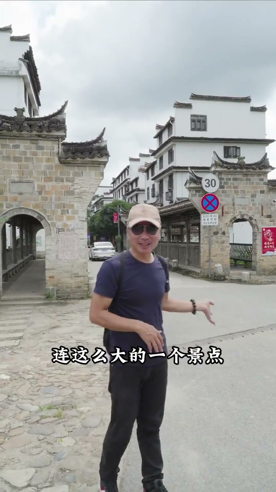
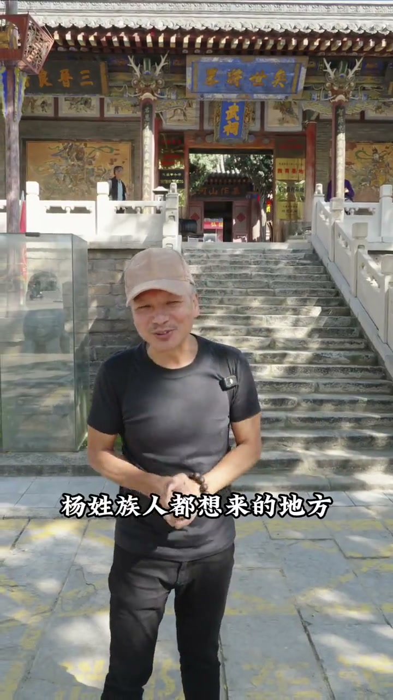
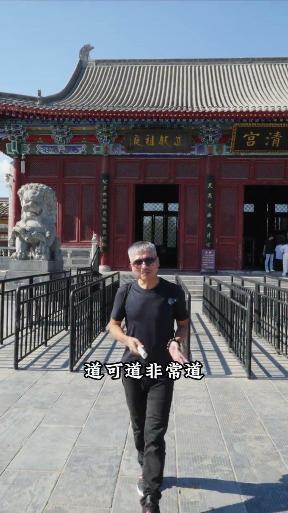
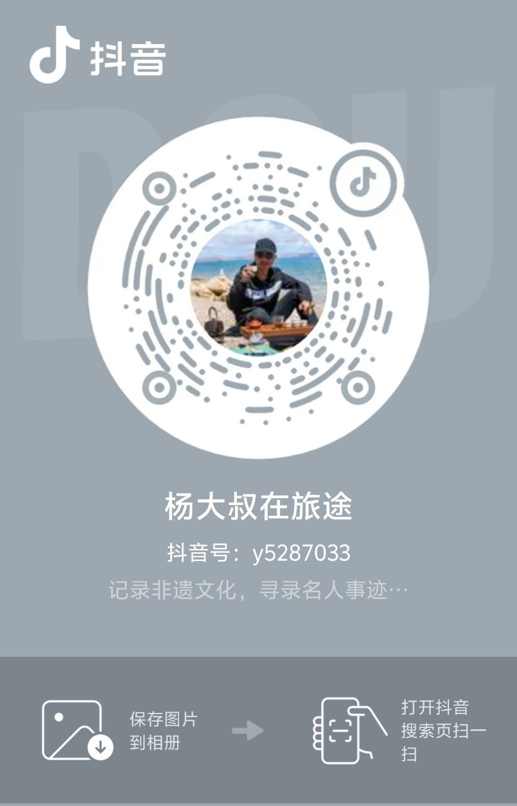
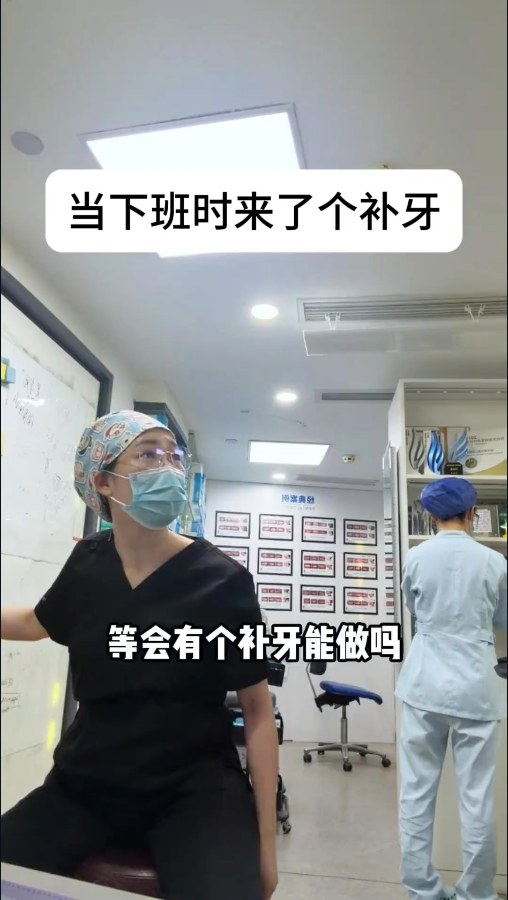
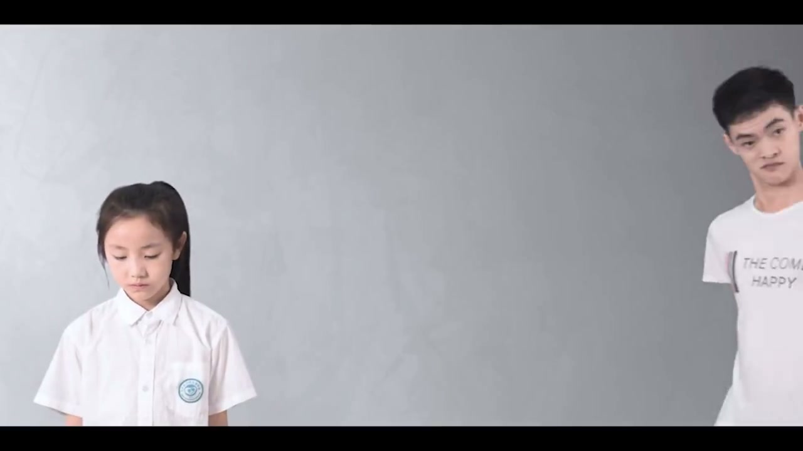
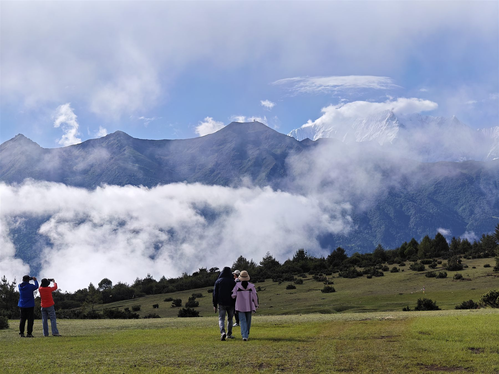
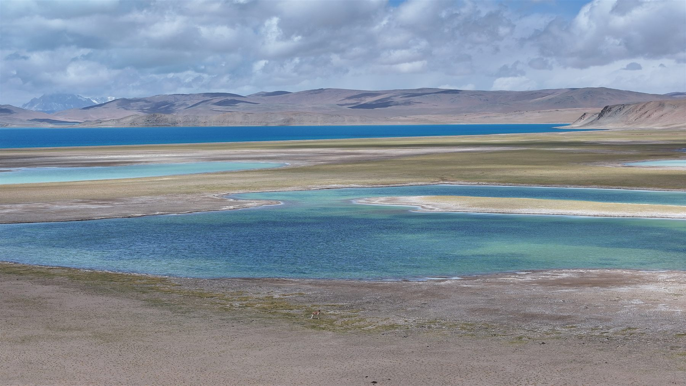
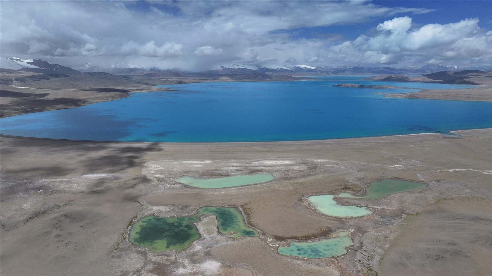

品牌内容运营 · 人物IP运营 · AI辅助内容生产
理解业务，
再把它讲清楚。
我把品牌诉求转化为受众愿意观看的内容，能够完成选题策划、拍摄制作与账号运营，并用AI辅助资料整理、内容生产和结果检查。
HOW I WORK
我不是从“拍什么”开始，
而是从“要解决什么”开始。
AI可以参与资料、结构与检查，但品牌判断、事实核验、行业合规和最终发布由人负责。
SELECTED CASES
三个项目，三种内容能力
用账号结果证明运营能力，用受限行业案例证明内容判断，再用商业影视证明执行质量。
文旅人物IP
杨大叔在旅途
围绕非遗文化、人物故事、小众村落与地方美食，完成从选题到成片、从差旅拍摄到账号运营的长期内容生产。
我的职责
- 账号整体运营、摄影摄像与视频剪辑
- 与IP主体共同完成选题策划
- 全国多地长周期外景拍摄与航拍
- 根据真实人物与地域文化组织内容
任职期增长+3.7万粉丝约5万增长至约8.7万
常见播放2—20万任职期间单条视频常见区间

飞书播放 ↗和平古镇 · 60秒代表片段6,748赞选题协作 · 拍摄 · 剪辑 · 账号运营国内流畅观看｜飞书 ↗

飞书播放 ↗杨忠武祠 · 60秒代表片段5,227赞选题协作 · 拍摄 · 剪辑 · 账号运营国内流畅观看｜飞书 ↗

飞书播放 ↗鹿邑 · 60秒代表片段3,232赞选题协作 · 拍摄 · 剪辑 · 账号运营国内流畅观看｜飞书 ↗

医疗人物IP
邓下班
在专业可信、平台传播与医疗内容限制之间寻找可持续的表达方式。
防御性医疗 · 45秒约1.5万赞1,123评论 · 4,412收藏 · 6,176分享国内流畅观看｜飞书 ↗

飞书播放 ↗下班来了个补牙 · 16秒3,458赞177评论 · 1,028收藏 · 464分享国内流畅观看｜飞书 ↗
内容判断：医疗IP往往需要先建立信任，不能把品牌建设简单等同于即时线下转化。我的工作是在业务目标、用户信任和表达合规之间找到可执行的内容切口。
商业影视执行
宣传片与专题片
传统传媒项目中的完整影像执行，证明专业拍摄、航拍、灯光和现场协作能力。
宣传片 · 前60秒代表片段原片全片摄影／航拍／灯光国内流畅观看｜飞书 ↗

飞书播放 ↗专题片 · 前60秒代表片段原片全片摄影／航拍／灯光国内流畅观看｜飞书 ↗
责任边界：上述两条成片的剪辑与收音由其他团队成员负责。
AI CONTENT OPERATIONS
把AI接进真实内容工作，
也知道何时停止复杂化。
我把AI用于海报、脚本、资料与项目知识管理；通过持续使用决定什么值得保留、什么应该停止，而不是为了技术复杂度继续堆叠系统。
业务问题
如何让不同AI接手同一批内容资产和项目进度，同时避免资料散落、版本漂移、越权覆盖和“计划冒充完成”？
项目路径
- Markdown作为唯一知识真源
- MCP网关、受限读写与内容版本实验
- 多端部署、通知和发布验收探索
- 识别复杂度收益递减，封存运行层
- 回归可读、可迁移、可直接维护的Vault
归档项目的历史证据
最终历史版本记录
归档时验收记录
发布信任记录
关键判断
MCP索引与检索层被实际使用证明有效；但审核、多机运行、通知和控制面持续扩张后，个人维护成本超过收益。最终没有为“技术复杂度”继续投入，而是保留有效经验、封存复杂系统，把现役方案收敛为纯Markdown。
它已经服务于真实内容工作
VISUAL AI SUBCASE四人直播海报
四人直播海报
竖版转横版重构
不是拉伸或裁切，而是保留四人、品牌与活动信息，重新设计横版4:3构图、站位、动作和信息层级。
- 宏杰提出画幅、站位、风格和信息保留要求
- Codex完成生成式重构，宏杰负责对比和验收
- 当次结果获宏杰95／100主观评价
- 正式发布仍需核对人物、Logo、中文与医疗合规
CONTENT SYSTEM SUBCASE短视频脚本不是一份文档，
短视频脚本不是一份文档，
而是一条会回流的内容链路
针对邓烨IP，把素材、脚本版本、定稿、制作、发布数据和复盘连接起来；日常前台保持简单，后台保留必要证据。
边界：这些数字证明脚本工具链的静态状态、版本和门禁按设计工作；真人试读、粗剪质量、平台审核与发布效果必须由真实项目继续验证。
我的角色：需求提出、业务场景定义、规则与权限边界、持续使用反馈、范围取舍和结果验收；AI承担主要代码与文档执行。
证据边界：上述数据来自归档项目当时的实现与验收记录，组件目前已停止运行，不表述为当前在线产品。现役Vault仍在使用；AI接手脚本已完成当前电脑验证，但新Agent与新电脑真实恢复仍待外部测试。
证据边界：上述数据来自归档项目当时的实现与验收记录，组件目前已停止运行，不表述为当前在线产品。现役Vault仍在使用；AI接手脚本已完成当前电脑验证，但新Agent与新电脑真实恢复仍待外部测试。
FIELD NOTES
从地面到航拍，保持现场观察
精选8张不同地域、光线与尺度的影像，避免把这一部分变成重复的旅行相册。



ABOUT
用内容理解业务，
用影像把它落地
我从商业影视摄影进入内容行业，随后逐步承担视频剪辑、人物IP策划与账号运营。我的工作方式是先理解人物与业务，再寻找受众愿意观看的切口，最后通过影像把内容稳定落地。
下一阶段，希望进入更重视品牌长期建设、内容价值与AI应用的新兴企业，承担品宣、品牌内容或AI相关内容运营工作。
期待品宣、品牌内容、人物IP及AI相关内容运营机会